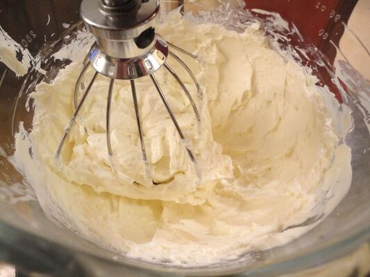

Cobertura Doce de Cream Cheese
INGREDIENTES:
- 150g de manteiga
- 270g de cream cheese
- 200g de açúcar de confeiteiro
- Essência de baunilha a gosto
MODO DE PREPARO:
Primeiro, derreta a manteiga no micro-ondas e misture-a com o açúcar, com ajuda de uma batedeira bata até obter uma textura clara e homogênea. Em seguida, adicione o cream cheese e a essência de baunilha a gosto, misturando bem para incorporar os ingredientes.
Corte o bolo em três camadas. Coloque a primeira camada em um prato e espalhe uma porção do recheio sobre ela. Em seguida, acrescente a segunda camada de bolo e mais uma camada de recheio. Finalize com a terceira camada de bolo. Cubra todo o bolo com uma fina camada do recheio restante e decore com frutas vermelhas de sua preferência.